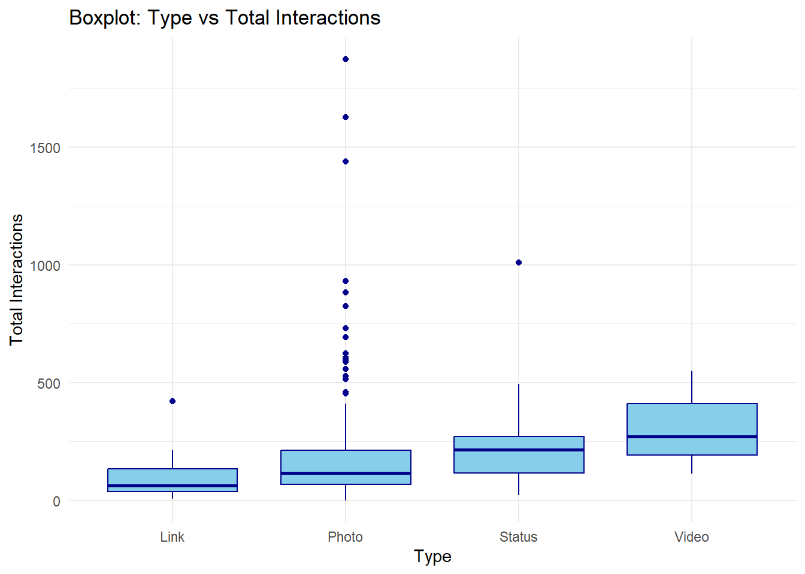
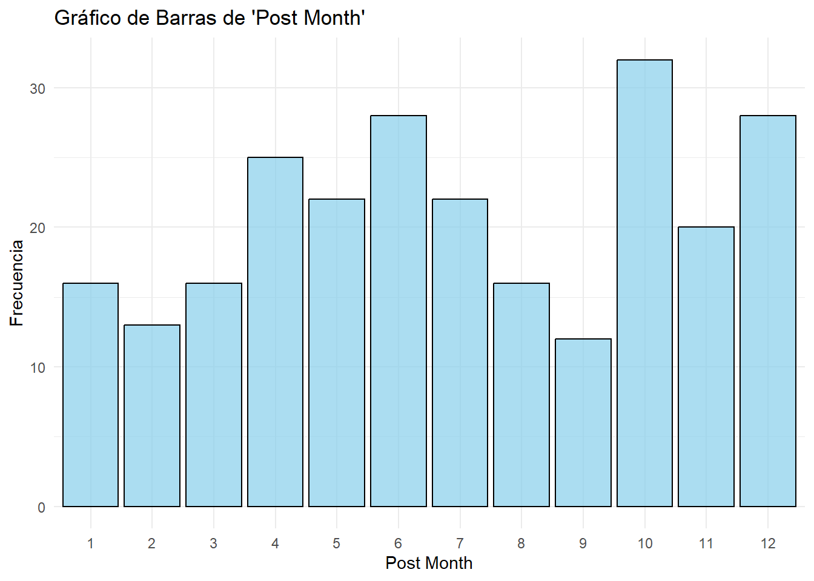
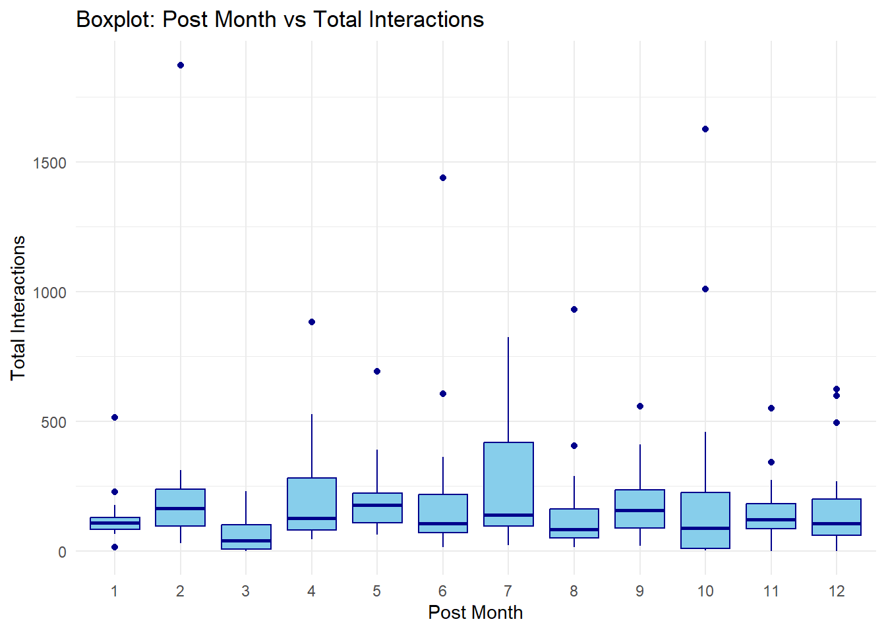
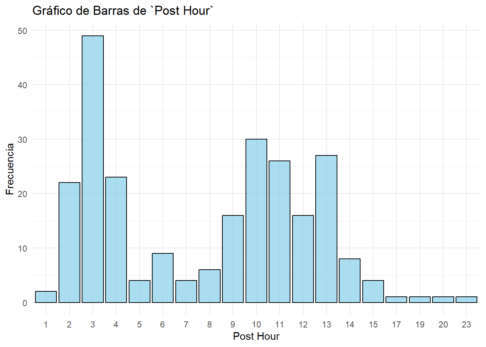
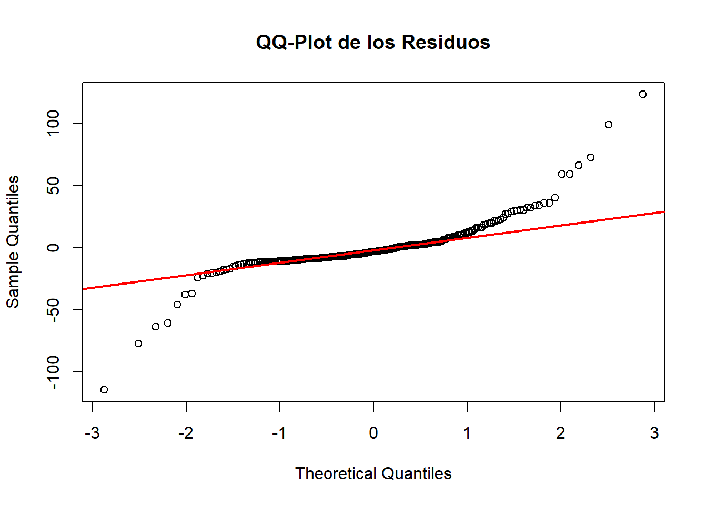
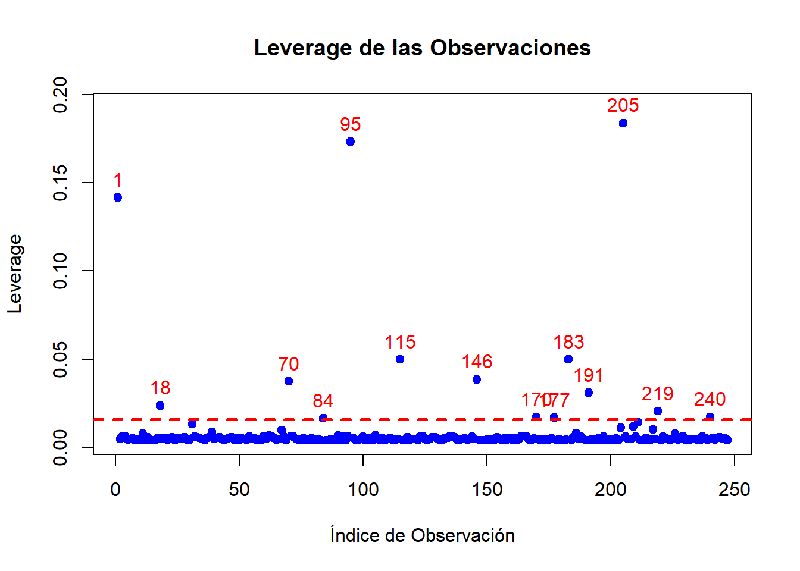

Warning: package 'ggplot2' was built under R version 4.3.3
library(dplyr)
Warning: package 'dplyr' was built under R version 4.3.3
Attaching package: 'dplyr'
The following objects are masked from 'package:stats':
filter, lag
The following objects are masked from 'package:base':
intersect, setdiff, setequal, union
library(knitr)
Warning: package 'knitr' was built under R version 4.3.3
#library(gt)library(pheatmap)
Warning: package 'pheatmap' was built under R version 4.3.3
Introducción (Cristina)
Información de los autores Este proyecto ha sido realizado por el grupo 9 del grado de Ciencia e Ingeniería de datos para la asignatura de Modelos de Regresión que cuanta con los siguientes integrantes:
Cristina Rodríguez Ayllón
Lucía Arnaldo Cuevas
Alonso Rescalvo Casas
Nuestro datasetes es el de “Facebook Metrics Dataset”. Es un conjunto de datos que recopila diversas métricas relacionadas con la interacción de los usuarios en páginas de Facebook. Estas métricas incluyen información sobre impresiones, alcance, interacciones con publicaciones, entre otras.
# lectura de datos en csv#dataset_Facebook <- read.csv("datos/dataset_Facebook.csv", stringsAsFactors = FALSE)# Cambiamos el nombre de las variables library(readr)dataset_Facebook <-read_delim("datos/dataset_Facebook.csv", delim =";", escape_double =FALSE, trim_ws =TRUE)
Rows: 500 Columns: 19
── Column specification ────────────────────────────────────────────────────────
Delimiter: ";"
chr (1): Type
dbl (18): Page total likes, Category, Post Month, Post Weekday, Post Hour, P...
ℹ Use `spec()` to retrieve the full column specification for this data.
ℹ Specify the column types or set `show_col_types = FALSE` to quiet this message.
#datos<-read.csv("datos/datos.csv")ntotal <-dim(dataset_Facebook)[1] # numero de observacionesptotal <-dim(dataset_Facebook)[2] # numero de columnas
Comprobamos que tenemos $n=$500 observaciones y $p=$19 variables en la base de datos.
Según la descripción oficial de los datos, las variables que conforman el conjunto de datos son:
(aqui iria da descripcion de las varibles y tal, la tablita que hizo Alonso)
EDA
Preguntas a resolver pre-EDA
(preguntas alonso)
Variable objetivo: ¿Existe una variable de “respuesta”? ¿Binaria o multiclase? (Cristina) Sí, la variable de respuesta es “Total Interactions”. Como estamos en un proyecto de regresión, esta variable es numérica continua y no es binaria ni multiclase.
¿Es posible identificar variables irrelevantes?. Estudiar variables relevantes requiere, habitualmente, métodos estadísticos. (Cristina) Sí, pero para hacerlo correctamente hay que aplicar métodos estadísticos como matrices de correlación.
¿Es posible identificar la distribución que siguen las variables? (Cristina) Sí, se puede hacer con gráficos y pruebas estadísticas como: + Histogramas para visualizar la forma de la distribución. + Boxplots para detectar outliers y asimetrías. + Q-Q Plots para comparar con una distribución normal. + Pruebas estadísticas como Shapiro-Wilk o Kolmogorov-Smirnov para evaluar normalidad.
(preguntas lucía)
Partición de los datos (Cristina)
Realizamos la división de nuestros datos en 3 muestras: entrenamiento, validación y test.
# mediante una semilla conseguimos que el ejercicio sea reproducibleset.seed(1)# creamos índicesindices <-1:ntotalntrain <- ntotal * .5ntest <- ntotal * .25nval <- ntotal - (ntrain+ntest)indices.train <-sample(indices, ntrain, replace =FALSE)indices.test <-sample(indices[-indices.train],ntest,replace=FALSE)indices.val <- indices[-c(indices.train,indices.test)]# Usamos el 50% de la base de datos como conjunto de entrenamiento# 25% para test# 25% para validacióntrain <- dataset_Facebook[indices.train,]test <- dataset_Facebook[indices.test,]val <- dataset_Facebook[indices.val, ]
Estudio de las variables
La idea es que vayamos viendo que distribucion sigue cada variables (con un histograma), si hay valores atipicos (con un boxplot) y enfrentarlas con el target
Target (Cristina)
Total Interactions Nuestro target es el total de interacciones, que es la suma de “me gusta”, “comentarios” y “compartir” de la publicación.
summary(train$`Total Interactions`)
Min. 1st Qu. Median Mean 3rd Qu. Max.
0.00 66.25 117.00 186.56 221.00 1873.00
#Histograma(Para ver la forma de la distribución):library(ggplot2)ggplot(train, aes(x =`Total Interactions`)) +geom_histogram(binwidth =50, fill ="lightblue", color ="black") +theme_minimal() +labs(title ="Distribución del Target (Total Interactions)", x ="Total Interactions", y ="Frecuencia")
#Boxplot(Para detectar outliers):ggplot(train, aes(y =`Total Interactions`)) +geom_boxplot(fill ="lightblue", color ="black", outlier.colour ="red") +theme_minimal() +labs(title ="Boxplot del Target (Total Interactions)", y ="Total Interactions")
# Seleccionar solo variables numéricasnumeric_vars <- train[, sapply(train, is.numeric)]# Calcular la matriz de correlacióncor_matrix <-cor(numeric_vars, use ="complete.obs")# Renombrar las variables con nombres más cortoscolnames(cor_matrix) <-c("1", "2", "3", "4","5", "6", "7", "8","9", "10", "11", "12","13", "14", "15", "16", "17", "18" ) # Edita según tus variablesrownames(cor_matrix) <-colnames(cor_matrix) # Para que las filas tengan el mismo nombre# Crear heatmap con nombres cortospheatmap(cor_matrix, display_numbers =TRUE, color =colorRampPalette(c("#98F5FF", "white", "#AB82FF"))(50))
Variables
Page total likes (Cristina) Esta variable (Total de “me gusta” de la página) esvel número de personas a las que les ha gustado la página de la empresa.
summary(train$`Page total likes`)
Min. 1st Qu. Median Mean 3rd Qu. Max.
81370 110158 128032 122570 136393 139441
El análisis de la variable Page total likes muestra que los valores oscilan entre un mínimo de 81,370 y un máximo de 139,441. La mediana se sitúa en 128,032, mientras que la media es ligeramente menor, con un valor de 122,570, lo que sugiere una leve asimetría hacia la izquierda. Esto indica que la mayoría de las publicaciones tienen un número de likes relativamente alto, concentrándose entre los valores de 120,000 y 140,000, aunque existen algunas con menos de 100,000 likes.
# Histograma de "Page total likes" en el conjunto de entrenamientoggplot(train, aes(x = train$`Page total likes`)) +geom_histogram(binwidth =400, fill ="lightblue", color ="black", alpha =0.7) +theme_minimal() +labs(title ="Distribución de Page total likes (Train)", x ="Page total likes", y ="Frecuencia")
Warning: Use of `` train$`Page total likes` `` is discouraged.
ℹ Use `Page total likes` instead.
Al observar el histograma, se aprecia que la distribución de los likes no es completamente uniforme, sino que tiende a agruparse en los valores más elevados.
# Boxplot de "Page total likes" en el conjunto de entrenamientoggplot(train, aes(y = train$`Page total likes`)) +geom_boxplot(fill ="lightblue", color ="black", outlier.colour ="red", outlier.size =2) +theme_minimal() +labs(title ="Boxplot de Page total likes (Train)", y ="Page total likes")
Warning: Use of `` train$`Page total likes` `` is discouraged.
ℹ Use `Page total likes` instead.
El boxplot refuerza esta idea, mostrando que la mayor parte de los datos se encuentra dentro de un rango definido, sin valores extremos que se consideren atípicos.
# Cargar librerías necesariaslibrary(ggplot2)# Page total likescor(train$`Total Interactions`, train$`Page total likes`, use="complete.obs") # Correlación
[1] 0.01749545
plot(train$`Page total likes`, train$`Total Interactions`, main="Page Total Likes vs Total Interactions",xlab="Page Total Likes", ylab="Total Interactions", col="red", pch=16)
En cuanto a la relación entre Page total likes y Total Interactions, la correlación obtenida es baja o moderada, lo que indica que el número de likes en una página no determina de manera significativa el nivel de interacción de sus publicaciones. El diagrama de dispersión confirma esta observación, ya que no se percibe una tendencia clara entre ambas variables. Hay casos en los que páginas con un menor número de likes generan una gran cantidad de interacciones, mientras que otras con más likes no necesariamente logran el mismo nivel de engagement.
Esto sugiere que la cantidad de likes en una página no es el único factor que influye en la interacción del público. Es probable que variables como el tipo de publicación, la hora en la que se publica o el contenido del mensaje tengan un impacto mayor en el número de interacciones.
Type (Cristina) En cuanto a ala varible Tipo, se trata del tipo de contenido (Enlace, Foto, Estado, Vídeo).
summary(train$`Type`)
Length Class Mode
250 character character
table(train$Type)
Link Photo Status Video
15 212 20 3
library(ggplot2)# Crear un gráfico de barrasggplot(train, aes(x = Type)) +geom_bar() +labs(title ="Gráfico de Barras de la Variable 'type'", x ="Tipo", y ="Frecuencia") +theme_minimal()
Se puede ver que predominan las fotos ante el resto.
# Crear un boxplot para enfrentar la variable categórica con el targetggplot(train, aes(x =as.factor(Type), y =`Total Interactions`)) +geom_boxplot(fill ="skyblue", color ="darkblue") +labs(title ="Boxplot: Type vs Total Interactions",x ="Type",y ="Total Interactions") +theme_minimal()

Photo parece ser el tipo de contenido más propenso a generar interacciones extremas (outliers). Esto podría reflejar que las fotos tienen un mayor potencial de viralización.
Video tiene una dispersión más grande en las interacciones, pero menos valores atípicos, lo que podría sugerir un desempeño más uniforme, con publicaciones tanto exitosas como mediocres.
Las publicaciones de tipo Link parecen ser las que generan menos interacciones, con poca variación y pocos outliers.
La mediana de interacciones es similar entre Photo, Status, y Video, pero las fotos destacan por sus outliers hacia arriba.
Category (Cristina) La variable categoría es la caracterización manual de contenido: acción (ofertas especiales y concursos), producto (publicidad directa, contenido explícito relacionado con la marca) e inspiración (contenido no explícito relacionado con la marca).
summary(train$Category)
Min. 1st Qu. Median Mean 3rd Qu. Max.
1.000 1.000 2.000 1.888 3.000 3.000
table(train$Category)
1 2 3
107 64 79
El 1 reprsenta “Action”, el 2 es “Product” y el 3 es “Inspiration”.
# Convertir Category en un factor (si no lo es ya)train$Category <-as.factor(train$Category)# Crear el gráfico de barras con colores personalizadosggplot(train, aes(x = Category, fill = Category)) +geom_bar() +scale_fill_manual(values =c("#98F5FF", "blue", "darkblue")) +# Paleta manuallabs(title ="Gráfico de Barras de la Variable 'Category' con Colores Personalizados", x ="Categoría", y ="Frecuencia") +theme_minimal()
# Crear un boxplot para enfrentar la variable categórica con el targetggplot(train, aes(x =as.factor(Category), y =`Total Interactions`)) +geom_boxplot(fill ="skyblue", color ="darkblue") +labs(title ="Boxplot: Category vs Total Interactions",x ="Category",y ="Total Interactions") +theme_minimal()
Post Month (Cristina)
La variable “Mes del posteo” se trata del mes en que se publicó el post (enero, febrero, marzo,…, diciembre).
summary(train$`Post Month`)
Min. 1st Qu. Median Mean 3rd Qu. Max.
1.000 4.000 7.000 6.936 10.000 12.000
# Crear un gráfico de barras para la variable 'Post Month'ggplot(train, aes(x =factor(`Post Month`))) +geom_bar(fill ="skyblue", color ="black", alpha =0.7) +labs(title ="Gráfico de Barras de 'Post Month'", x ="Post Month", y ="Frecuencia") +theme_minimal()

# Crear un boxplot para enfrentar la variable categórica con el targetggplot(train, aes(x =as.factor(`Post Month`), y =`Total Interactions`)) +geom_boxplot(fill ="skyblue", color ="darkblue") +labs(title ="Boxplot: Post Month vs Total Interactions",x ="Post Month",y ="Total Interactions") +theme_minimal()

Algunos meses muestran una mayor dispersión de interacciones (como en julio y octubre), lo que indica que hubo publicaciones con interacciones muy por encima del promedio.
Se observan outliers en varios meses, lo que sugiere que hubo publicaciones excepcionales con interacciones inusualmente altas.
Los meses 7 (julio) y 10 (octubre) parecen tener la mayor variabilidad en interacciones.
No parece haber una tendencia clara en la estacionalidad de las interacciones a lo largo de los meses.
Algunos meses tienen más publicaciones virales (con valores extremos), pero la mayoría de los meses tienen una distribución de interacciones relativamente baja y estable.
Post Weekday (Cristina) Esta variable trata del día de la semana en que se publicó la entrada (domingo, lunes, …, sábado).
summary(train$`Post Weekday`)
Min. 1st Qu. Median Mean 3rd Qu. Max.
1.000 2.000 4.000 4.028 6.000 7.000
table(train$`Post Weekday`)
1 2 3 4 5 6 7
37 35 32 36 36 38 36
# Crear un gráfico de barras para la variable 'Post Month'ggplot(train, aes(x =factor(`Post Weekday`))) +geom_bar(fill ="skyblue", color ="black", alpha =0.7) +labs(title ="Gráfico de Barras de `Post Weekday`", x ="Post Weekday", y ="Frecuencia") +theme_minimal()
# Crear un boxplot para enfrentar la variable categórica con el targetggplot(train, aes(x =as.factor(`Post Weekday`), y =`Total Interactions`)) +geom_boxplot(fill ="skyblue", color ="darkblue") +labs(title ="Boxplot: Post Weekday vs Total Interactions",x ="Post Weekday",y ="Total Interactions") +theme_minimal()
No parece haber una tendencia clara en la estacionalidad de las interacciones a lo largo de la semana.
Post Hour (Cristina)
Esta variable es la hora de publicación de la publicación (0, 1, 2, 3, 4, …, 23)
summary(train$`Post Hour`)
Min. 1st Qu. Median Mean 3rd Qu. Max.
1.000 3.000 9.000 7.836 11.000 23.000
# Crear un gráfico de barras para la variable 'Post Month'ggplot(train, aes(x =factor(`Post Hour`))) +geom_bar(fill ="skyblue", color ="black", alpha =0.7) +labs(title ="Gráfico de Barras de `Post Hour`", x ="Post Hour", y ="Frecuencia") +theme_minimal()

# Crear un boxplot para enfrentar la variable categórica con el targetggplot(train, aes(x =as.factor(`Post Hour`), y =`Total Interactions`)) +geom_boxplot(fill ="skyblue", color ="darkblue") +labs(title ="Boxplot: Post Hour vs Total Interactions",x ="Post Hour",y ="Total Interactions") +theme_minimal()
Los resultados muestran que las publicaciones realizadas entre las 5 AM y 12 PM tienden a generar más interacciones en promedio. En particular, las publicaciones a las 5 AM y 12 PM presentan las medianas más altas, indicando una mayor participación de los usuarios.
Además, se identificaron varios outliers (valores atípicos) en la madrugada (especialmente entre las 2 AM y 5 AM), lo que sugiere que algunas publicaciones pueden volverse virales, aunque no sea la norma. Por otro lado, las publicaciones realizadas después de las 5 PM muestran una menor cantidad de interacciones y una variabilidad reducida.
Paid
Lifetime Post Total Reach
Lifetime Post Total Impressions
Lifetime Engaged Users
Lifetime Post Consumers
Lifetime Post Consumptions
Lifetime Post Impressions by people who have liked your Page
Lifetime Post reach by people who like your Page
Lifetime People who have liked your Page and engaged with your post
Comment
Like
Share
Modelos de Regresión lineal
Regresión lineal simple (Cristina)
Tras observar las variables hemos optado por hacer la regresión lineal simple enfrentando Total Interactions (nuestro target) con la variable Likes.
1: Ajustar el modelo de regresión lineal
Ajustamos el modelo: Estamos ajustando un modelo de regresión lineal simple donde la variable dependiente es Total Interactions y la variable predictora es Page total likes. Ajustamos el modelo y calculamos los coeficientes de la recta de regresión.
Obtener estimadores: Extraemos los coeficientes del modelo (intercepto y pendiente) junto con sus errores estándar, valores t y p-valores.
Esto nos permite entender la relación entre Page total likes y Total Interactions.
# Ajustar el modelo de regresión linealtrain_clean <-na.omit(train)modelo <-lm(`Total Interactions`~`like`, data = train_clean)# Obtener estimadores de los parámetros y errores estándarestimadores <-coef(summary(modelo)) # Incluye estimadores y errores estándar# Imprimir los resultadoscat("Estimadores para los parámetros del modelo:\n")
Estimadores para los parámetros del modelo:
print(estimadores)
Estimate Std. Error t value Pr(>|t|)
(Intercept) 10.956986 1.680049329 6.521824 3.941591e-10
like 1.124413 0.006429907 174.872307 3.092366e-259
Se ajustó un modelo de regresión lineal simple para analizar la relación entre la variable independiente “Likes” y la variable dependiente “Total Interactions”. La ecuación estimada del modelo es la siguiente:
Total_Interactions = 10.96 + 1.124 × like
Los resultados del modelo indican lo siguiente:
Intercepto (β_0=10.96): Representa el valor esperado de interacciones totales cuando el número de “likes” es cero.
Pendiente (β_1=1.124): Indica que, en promedio, cada “like” adicional se asocia con un incremento de 1.124 interacciones totales.
Para evaluar la significancia de los coeficientes, se analizaron sus respectivos errores estándar, valores t y p-valores.
El p-valor asociado a la variable “like” es extremadamente pequeño (3.09×10^−259), lo que indica que su influencia en el modelo es altamente significativa. Asimismo, su t-valor es considerablemente alto (174.87), lo que refuerza su importancia en la predicción de interacciones totales.
Dado que ambos p-valores son menores a 0.05, se concluye que los coeficientes son estadísticamente significativos, lo que valida la relación entre los “likes” y las interacciones totales.
2: Resumen del modelo
# Obtener resumen del modelosummary(modelo)
Call:
lm(formula = `Total Interactions` ~ like, data = train_clean)
Residuals:
Min 1Q Median 3Q Max
-114.651 -8.804 -3.016 4.768 123.701
Coefficients:
Estimate Std. Error t value Pr(>|t|)
(Intercept) 10.95699 1.68005 6.522 3.94e-10 ***
like 1.12441 0.00643 174.872 < 2e-16 ***
---
Signif. codes: 0 '***' 0.001 '**' 0.01 '*' 0.05 '.' 0.1 ' ' 1
Residual standard error: 21.05 on 245 degrees of freedom
Multiple R-squared: 0.9921, Adjusted R-squared: 0.992
F-statistic: 3.058e+04 on 1 and 245 DF, p-value: < 2.2e-16
3: Tabla ANOVA
# Obtener y mostrar la tabla ANOVAtabla_anova <-anova(modelo)cat("\nTabla ANOVA:\n")
Tabla ANOVA:
print(tabla_anova)
Analysis of Variance Table
Response: Total Interactions
Df Sum Sq Mean Sq F value Pr(>F)
like 1 13555096 13555096 30580 < 2.2e-16 ***
Residuals 245 108599 443
---
Signif. codes: 0 '***' 0.001 '**' 0.01 '*' 0.05 '.' 0.1 ' ' 1
Suma de Cuadrados (Sum Sq): + La variabilidad explicada por la variable “like” en el modelo es 13555096, lo que representa una proporción significativa de la variabilidad total en “Total Interactions”. + La variabilidad residual es de 108599, lo que sugiere que la mayor parte de la variabilidad en las interacciones totales es explicada por la variable “like”.
Valor F: + El estadístico F = 30580 indica cuántas veces la variabilidad explicada por el modelo es mayor que la variabilidad no explicada. Un valor F tan alto sugiere que el modelo es altamente significativo.
Significancia del Modelo (p-valor): + El p-valor es < 2.2e-16, lo que es significativamente menor al umbral habitual de 0.05. + Esto indica que existe una relación estadísticamente significativa entre “like” y “Total Interactions”, descartando la posibilidad de que la relación observada sea producto del azar.
4: Estudiar los residuos
Gráfico de residuos vs. valores ajustados
# Obtener los residuosresiduos <-resid(modelo)# 1. Gráfico de residuos vs. valores ajustadosvalores_ajustados <-fitted(modelo)plot(valores_ajustados, residuos,main ="Residuos vs Valores Ajustados",xlab ="Valores Ajustados",ylab ="Residuos",pch =19, col ="blue")abline(h =0, col ="red", lwd =2)
Este gráfico muestra la relación entre los residuos y los valores ajustados por el modelo. Se observa que la dispersión de los puntos no es completamente homogénea, ya que hay una mayor concentración en los valores bajos y una mayor variabilidad en los valores altos. Esto sugiere la posible presencia de heterocedasticidad (varianza no constante de los residuos), lo que podría afectar la validez de las inferencias realizadas a partir del modelo.
Histograma de los residuos
# 2. Histograma de los residuoshist(residuos,main ="Histograma de Residuos",xlab ="Residuos",col ="lightblue", border ="black")
El histograma permite analizar la distribución de los residuos. En este caso, la distribución no es completamente simétrica ni normal, pues presenta cierta asimetría y una posible concentración alrededor de cero. Esto indica que los errores no siguen una distribución normal.
QQ-Plot de residuos
# 3. QQ-Plot de residuosqqnorm(residuos, main ="QQ-Plot de los Residuos")qqline(residuos, col ="red", lwd =2)

El gráfico de QQ-Plot compara los cuantiles de los residuos con los cuantiles de una distribución normal teórica. Se observa que los puntos no siguen completamente la línea roja, especialmente en los extremos, lo que indica la presencia de colas más pesadas de lo esperado bajo una distribución normal. Esto confirma la posible desviación de la normalidad en los residuos.
Pruebas de normalidad de los residuos
# 4. Pruebas de normalidad de los residuosshapiro_test <-shapiro.test(residuos)cat("Prueba de Shapiro-Wilk para normalidad de los residuos:\n")
Prueba de Shapiro-Wilk para normalidad de los residuos:
print(shapiro_test)
Shapiro-Wilk normality test
data: residuos
W = 0.78432, p-value < 2.2e-16
La prueba de Shapiro-Wilk fue aplicada a los residuos del modelo para evaluar si siguen una distribución normal. Los resultados obtenidos son:
Estadístico W = 0.78432
p-valor < 2.2e-16
Dado que el p-valor es significativamente menor a 0.05, se rechaza la hipótesis nula de normalidad. Esto confirma que los residuos no siguen una distribución normal, lo que puede afectar la validez de los intervalos de confianza y las pruebas de hipótesis del modelo.
Gráfico de residuos vs. una variable predictora (ejemplo: Page total likes)
# Gráfico de residuos vs. likeplot(train_clean$like, residuos,main ="Residuos vs Like",xlab ="Like",ylab ="Residuos",pch =19, col ="purple")abline(h =0, col ="red", lwd =2)
Este gráfico permite evaluar la relación entre los residuos y la variable predictora “Like”. Se observa que los residuos no están distribuidos aleatoriamente, sino que presentan un patrón en forma de abanico, lo que nuevamente sugiere heterocedasticidad. La varianza de los residuos parece aumentar a medida que crecen los valores de “Like”, lo que podría indicar que la relación entre las variables no es completamente lineal o que existe una influencia de valores atípicos.
5: Diagnóstico del modelo
Prueba de homocedasticidad (Breusch-Pagan)
# 2. Prueba de homocedasticidad (Breusch-Pagan)library(lmtest)
Warning: package 'lmtest' was built under R version 4.3.3
Loading required package: zoo
Warning: package 'zoo' was built under R version 4.3.3
Attaching package: 'zoo'
The following objects are masked from 'package:base':
as.Date, as.Date.numeric
breusch_pagan <-bptest(modelo)cat("\nPrueba de Breusch-Pagan para homocedasticidad:\n")
Prueba de Breusch-Pagan para homocedasticidad:
print(breusch_pagan)
studentized Breusch-Pagan test
data: modelo
BP = 128.12, df = 1, p-value < 2.2e-16
La prueba de Breusch-Pagan se utiliza para evaluar si los residuos del modelo tienen varianza constante (homocedasticidad) o si, por el contrario, presentan heterocedasticidad (varianza no constante).
Resultados obtenidos: + Estadístico BP = 128.12 + Grados de libertad (df) = 1 + p-valor < 2.2e-16 Interpretación:
El p-valor es extremadamente pequeño (< 0.05), lo que indica que se rechaza la hipótesis nula de homocedasticidad.
Esto significa que existe heterocedasticidad en los residuos, es decir, la varianza de los errores no es constante a lo largo de los valores de la variable predictora.
Prueba de autocorrelación (Durbin-Watson)
# 3. Estadística Durbin-Watson para autocorrelación de los residuosdurbin_watson <-dwtest(modelo)cat("\nPrueba de Durbin-Watson para autocorrelación de los residuos:\n")
Prueba de Durbin-Watson para autocorrelación de los residuos:
print(durbin_watson)
Durbin-Watson test
data: modelo
DW = 1.7823, p-value = 0.04265
alternative hypothesis: true autocorrelation is greater than 0
La prueba de Durbin-Watson se emplea para detectar la presencia de autocorrelación en los residuos, es decir, si los errores están correlacionados en función del orden de las observaciones.
Resultados obtenidos:
Estadístico DW = 1.7823
p-valor = 0.04265
Hipótesis alternativa: Existe autocorrelación positiva en los residuos. Interpretación:
El estadístico Durbin-Watson cercano a 2 indica que no hay una autocorrelación fuerte. Sin embargo, el p-valor de 0.04265 es menor a 0.05, lo que sugiere la presencia de una autocorrelación positiva débil en los residuos. La autocorrelación de los errores puede indicar que hay una relación no capturada en el modelo o que las observaciones no son completamente independientes.
Paso 6: Leverage y observaciones influyentes
# Calcular leverageleverage <-hatvalues(modelo)# Umbral para leverage altop <-length(coef(modelo)) # Número de parámetros (incluyendo el intercepto)n <-nrow(train) # Número de observacionesleverage_threshold <-2* p / n# Identificar observaciones con leverage altoleverage_high <-which(leverage > leverage_threshold)# Resultadoscat("Valores de leverage:\n")
Se calculó el umbral para identificar leverage alto como: 0.016 e identificaron 14 observaciones que superan el umbral de leverage alto. Estas observaciones son: 1,18,70,84,95,115,146,170,177,183,191,205,219,240 En el gráfico de leverage, estas observaciones están señalizadas con el núemro en rojo.
# Gráfico de leverageplot(leverage, main ="Leverage de las Observaciones",xlab ="Índice de Observación",ylab ="Leverage",pch =19, col ="blue", ylim=c(min(leverage)*.9,max(leverage)*1.05))abline(h = leverage_threshold, col ="red", lwd =2, lty =2) # Línea del umbraltext(leverage_high, leverage[leverage_high], labels = leverage_high, pos =3, col ="red")

Paso 7: Distancia de Cook, DFBETAS y DFFITS
# 1. Calcular Distancia de Cookcooks_distance <-cooks.distance(modelo)# 2. Calcular DFBETASdfbetas_values <-dfbetas(modelo)# 3. Calcular DFFITSdffits_values <-dffits(modelo)# Umbrales sugeridoscooks_threshold <-4/ n # Umbral para Distancia de Cookdffits_threshold <-2*sqrt(p / n) # Umbral para DFFITS# Resultadoscat("Distancia de Cook (primeras 10 observaciones):\n")
Observaciones con Distancia de Cook alta: 1,11,30,31,67,70,95,115,128,183,191,204,205,209,219 Estas observaciones tienen una influencia significativa en el modelo. En el gráfico, las observaciones destacadas en rojo superan el umbral y podrían estar afectando los coeficientes de la regresión.
Observaciones con DFFITS alto: 1,11,30,31,67,70,95,115,128,183,191,204,205,209,219 Estas observaciones tienen un gran impacto en la predicción individual de la variable dependiente. En el gráfico, las observaciones con valores extremos de DFFITS están resaltadas en rojo.
Los valores de DFBETAS indican que algunas observaciones tienen un impacto significativo en los coeficientes del modelo. En particular:la observación 1 tiene un DFBETAS alto en el intercepto y la variable “like”, lo que indica que al removerla, los coeficientes cambiarían notablemente.
Graficar Distancia de Cook
# Graficar Distancia de Cookplot(cooks_distance,main ="Distancia de Cook",xlab ="Índice de Observación",ylab ="Distancia de Cook",pch =19, col ="blue", ylim=c(min(cooks_distance)*.9,max(cooks_distance)*1.05))abline(h = cooks_threshold, col ="red", lwd =2, lty =2)text(which(cooks_distance > cooks_threshold), cooks_distance[cooks_distance > cooks_threshold],labels =which(cooks_distance > cooks_threshold), pos =3, col ="red")
Graficar DFFITS
# Graficar DFFITSplot(dffits_values,main ="DFFITS",xlab ="Índice de Observación",ylab ="DFFITS",pch =19, col ="green", ylim=c(min(dffits_values)*.85,max(dffits_values)*1.07))abline(h =c(dffits_threshold, -dffits_threshold), col ="red", lwd =2, lty =2)text(which(abs(dffits_values) > dffits_threshold), dffits_values[abs(dffits_values) > dffits_threshold],labels =which(abs(dffits_values) > dffits_threshold), pos =3, col ="red")
Regresión lineal múltiple (Lucía)
todas
Métodos de selección de variables y problemas de regularización
Ridge (Lucía)
LASSO (Cristina)
A la hora de realizar LASSO hemos quitado las variables “comment”, “like” y “share” (aparte del target), ya que nuestro target es el resultado de la suma de estas tres variables.
library(glmnet)
Warning: package 'glmnet' was built under R version 4.3.3
Loading required package: Matrix
Loaded glmnet 4.1-8
# Eliminar filas NA y definir variable dependiente e independientestrain_clean <-na.omit(train)# Definir Y (variable objetivo) como "Total Interactions"Y <- train_clean$`Total Interactions`# Definir X (matriz de variables predictoras) excluyendo la variable objetivoX <- train_clean[, !names(train_clean) %in%c("Total Interactions", "comment", "like", "share")]# Eliminar todas las variables categóricas de XX <- X[sapply(X, is.numeric)]# Convertir X a matriz numérica para glmnetX <-as.matrix(X)
# Ajustar el modelo Lassomodelo_lasso <-glmnet(X, Y, alpha =1)# Seleccionar el mejor lambda usando validación cruzadacv_lasso <-cv.glmnet(X, Y, alpha =1)lambda_optimo <- cv_lasso$lambda.min # Mejor valor de lambda# Ajustar modelo final con lambda óptimomodelo_lasso_final <-glmnet(X, Y, alpha =1, lambda = lambda_optimo)# Mostrar coeficientes del modelocoeficientes_lasso <-coef(modelo_lasso_final)print(coeficientes_lasso)
14 x 1 sparse Matrix of class "dgCMatrix"
s0
(Intercept) 17.1887780191
Page total likes 0.0001525890
Post Month -3.1736744084
Post Weekday -0.1051345219
Post Hour -0.1619722916
Paid 7.2597364543
Lifetime Post Total Reach -0.0015120674
Lifetime Post Total Impressions 0.0002649633
Lifetime Engaged Users 1.2150620077
Lifetime Post Consumers -1.1447962909
Lifetime Post Consumptions -0.0002175745
Lifetime Post Impressions by people who have liked your Page 0.0005053406
Lifetime Post reach by people who like your Page .
Lifetime People who have liked your Page and engaged with your post -0.0020109597
Las variables “Paid” y “Lifetime Engaged Users” tienen un impacto positivo fuerte y significativo en las interacciones totales.
Variables como “Page total likes” y “Lifetime Post Total Reach” tienen un impacto muy pequeño, lo que sugiere que no son tan relevantes para predecir las interacciones.
Las variables como “Post Month”, “Lifetime Post Consumers” y “Lifetime Post reach by people who like your Page” tienen efectos negativos sobre las interacciones totales.
Lasso ha reducido el número de variables que influyen en el modelo, eliminando las que no aportan valor predictivo.